We compare AutoSERL with SERL to evaluate training efficiency.
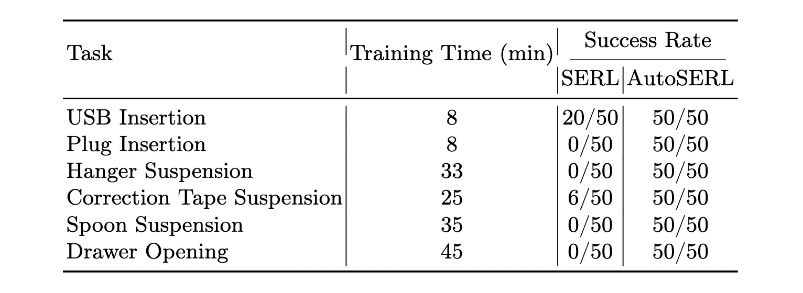
| Task | Training Time | SERL | AutoSERL | ||
|---|---|---|---|---|---|
| Training | Evaluation | Training | Evaluation | ||
| USB Insertion | 8 min |
Trained with SERL for 8 minutes. |
Checkpoint at 8 min, 50 trials, success rate 20/50. |
Trained with AutoSERL for 8 minutes. |
Checkpoint at 8 min, 50 trials, success rate 50/50. |
| Plug Insertion | 8 min |
Trained with SERL for 8 minutes. |
Checkpoint at 8 min, 50 trials, success rate 0/50. |
Trained with AutoSERL for 8 minutes. |
Checkpoint at 8 min, 50 trials, success rate 50/50. |
| Hanger Suspension | 33 min |
Trained with SERL for 33 minutes. |
Checkpoint at 33 min, 50 trials, success rate 0/50. |
Trained with AutoSERL for 33 minutes. |
Checkpoint at 33 min, 50 trials, success rate 50/50. |
| Correction Tape Suspension | 25 min |
Trained with SERL for 25 minutes. |
Checkpoint at 25 min, 50 trials, success rate 0/50. |
Trained with AutoSERL for 25 minutes. |
Checkpoint at 25 min, 50 trials, success rate 50/50. |
| Spoon Suspension | 35 min |
Trained with SERL for 35 minutes. |
Checkpoint at 35 min, 50 trials, success rate 0/50. |
Trained with AutoSERL for 35 minutes. |
Checkpoint at 35 min, 50 trials, success rate 50/50. |
| Drawer Opening | 45 min |
Trained with SERL for 45 minutes. |
Checkpoint at 45 min, 50 trials, success rate 0/50. |
Trained with AutoSERL for 45 minutes. |
Checkpoint at 45 min, 50 trials, success rate 50/50. |
We compare AutoSERL with HIL-SERL to evaluate training efficiency.
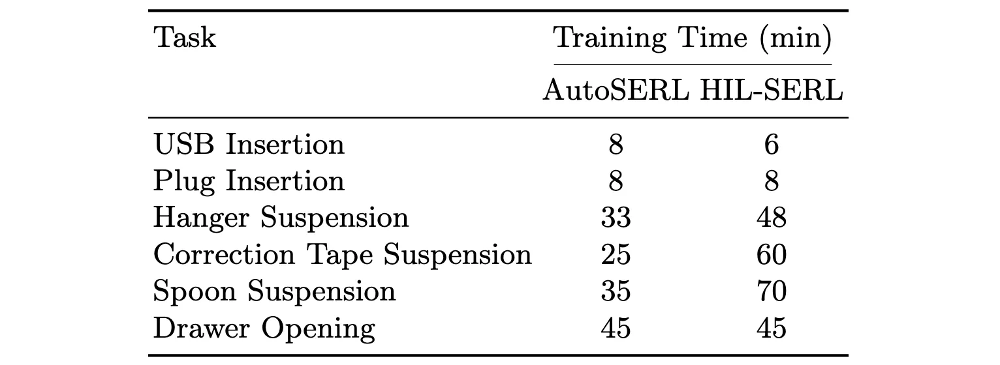
To further validate the effectiveness of AutoSERL, we compare it with BC and MILES in terms of final success rate.
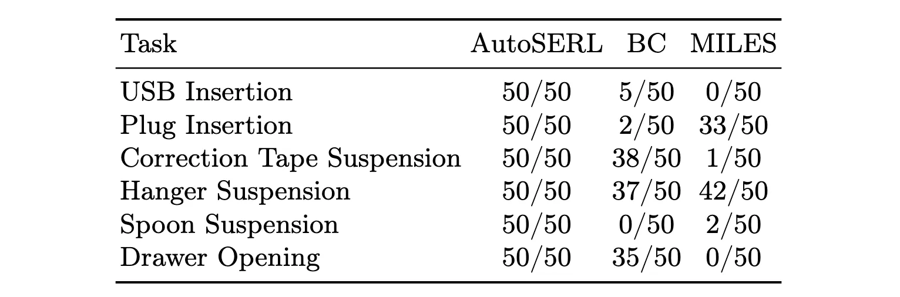
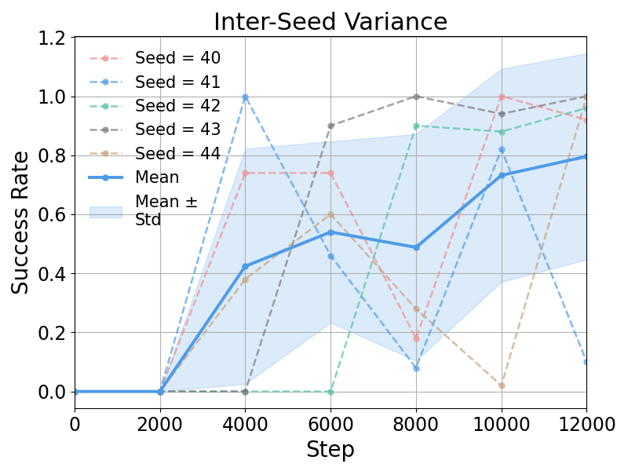
We retrain the plug insertion task with five seeds (40–44). Under all seeds, the method achieves 100% or near 100% success rates, indicating robustness to random initialization and low performance variance across different seeds.
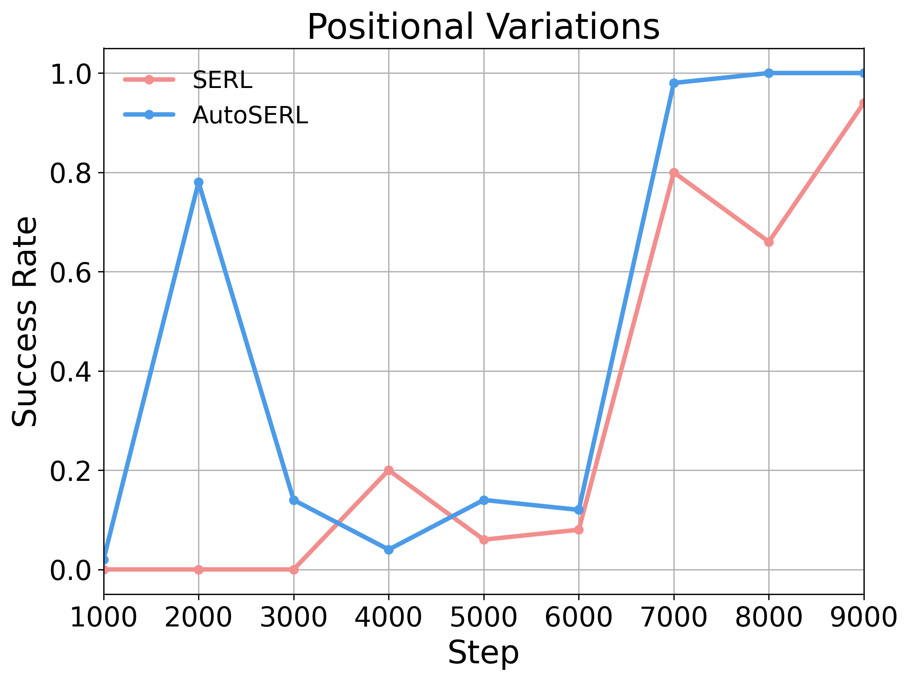
In the plug insertion task, we randomize the initial plug position within a ±3 cm range in the x–y plane to evaluate robustness to positional perturbations. AutoSERL achieves higher success rates and more stable convergence than SERL, demonstrating improved robustness to positional variations.
Overall, both parameters degrade performance when set too small or too large, and perform best within a moderate range. The stagnation window length lstag defines the number of steps required for the end-effector to move beyond th1 and is set according to the task's action scale.
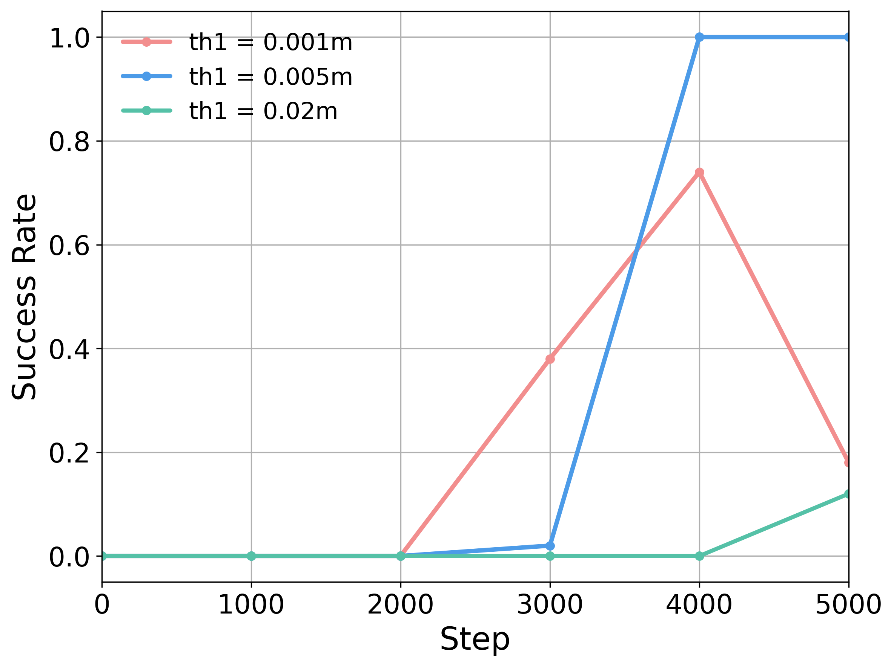
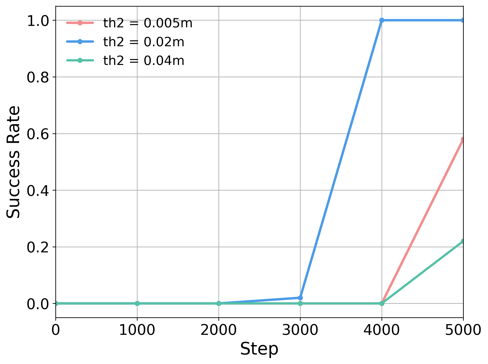
To evaluate the contribution of each component in AutoSERL, we conduct three
ablation studies: (1) No sliding window intervention: the sliding window intervention mechanism is removed, and no intervention points are used to guide the
robot during training. (2) No recovery mechanism: the safety recovery mechanism is removed, and when the robot encounters failure states, it must rely
solely on its own exploration to recover. (3) No intervention termination: the intervention termination mechanism is removed, and the intervention continuously
supervises the training process until the end.
Ablation results show that the sliding window intervention, recovery mechanism, and intervention termination are all essential to AutoSERL's performance, as removing any of them degrades learning efficiency or success rates.
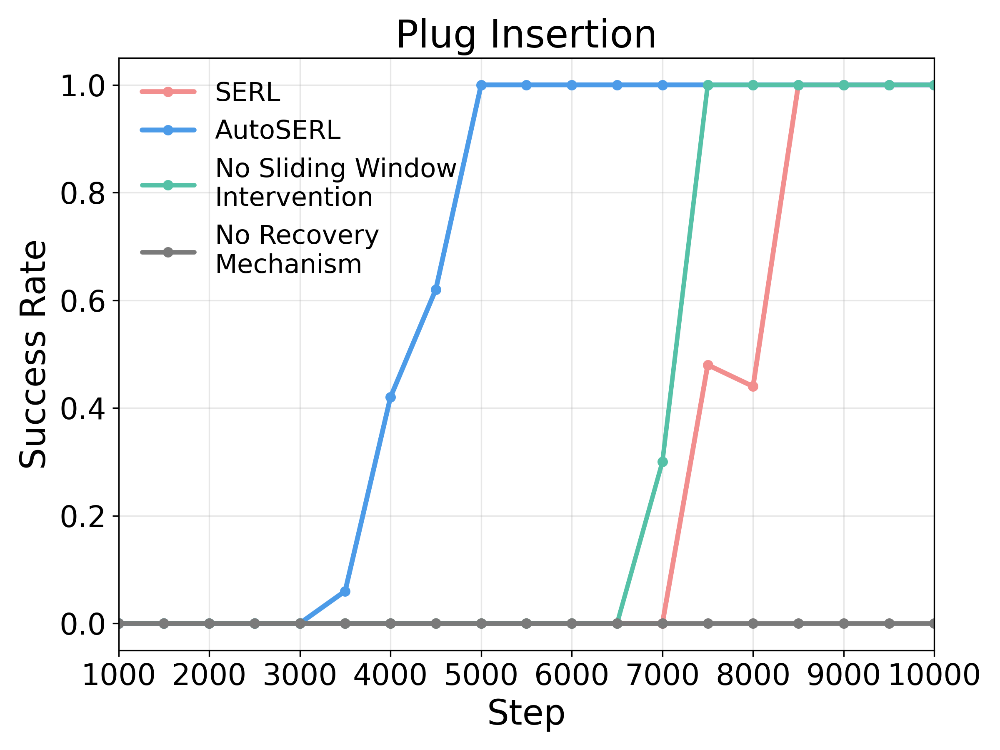
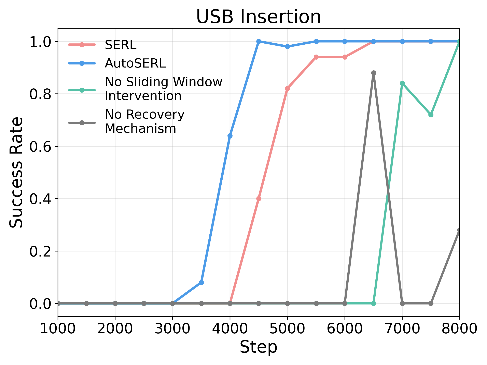
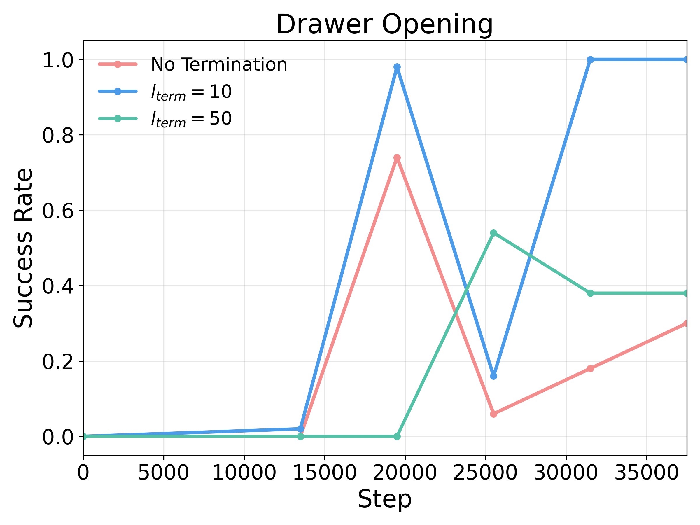
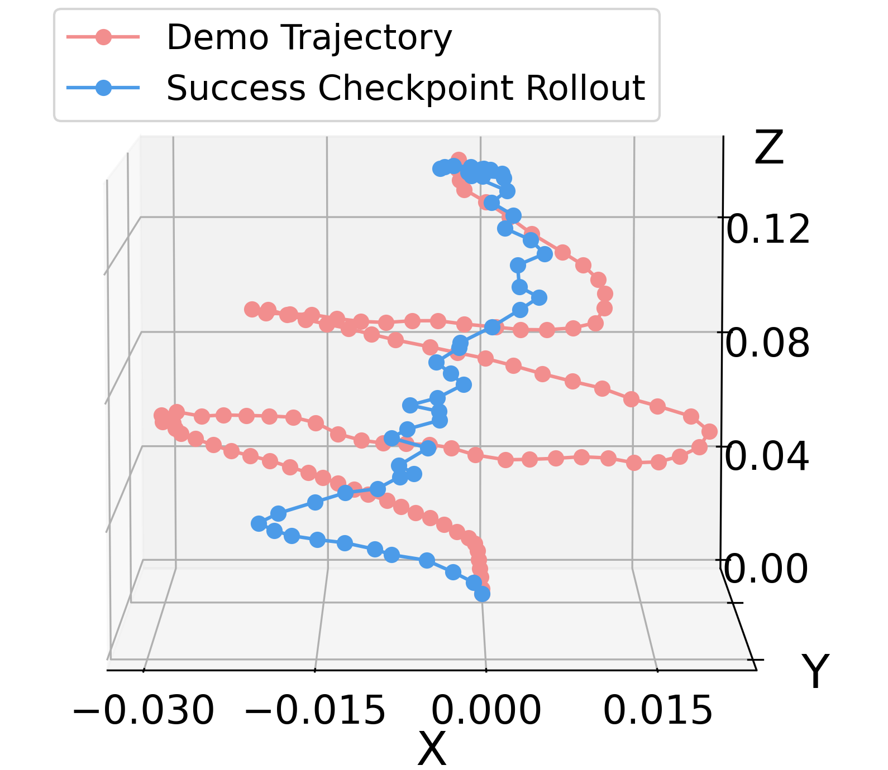
Taking the plug insertion task as an example, we collect a non-optimal trajectory of length 99 and obtain a rollout from the first checkpoint reaching 50/50 success, with length 54. This suggests that the policy goes beyond simple imitation and performs trajectory-level optimization over the demonstration.
We propose AutoSERL, a real-world reinforcement learning method that enables training through automatic intervention using only a single demonstration trajectory. AutoSERL incorporates sliding window intervention, safety recovery intervention, and intervention termination to ensure safe and stable real-world reinforcement learning. AutoSERL outperforms multi-demonstration RL, behavior cloning, and one-shot imitation learning baselines across six contact-intensive tasks spanning three task categories while matching HIL-SERL. We believe that a single demonstration is sufficient for automated real-world robotic RL in tasks with easily recoverable failures as studied in this work. However, for tasks with more diverse failure modes, a single demonstration does not contain sufficient information for effective recovery and intervention. We hope this work will inspire future research on automated real-world robotic RL and enable its extension to manipulation tasks with more diverse failure modes and higher-dimensional action spaces.